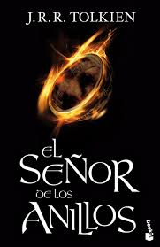
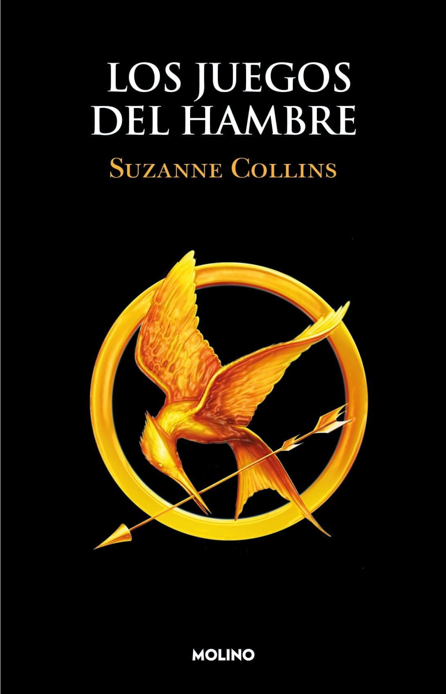
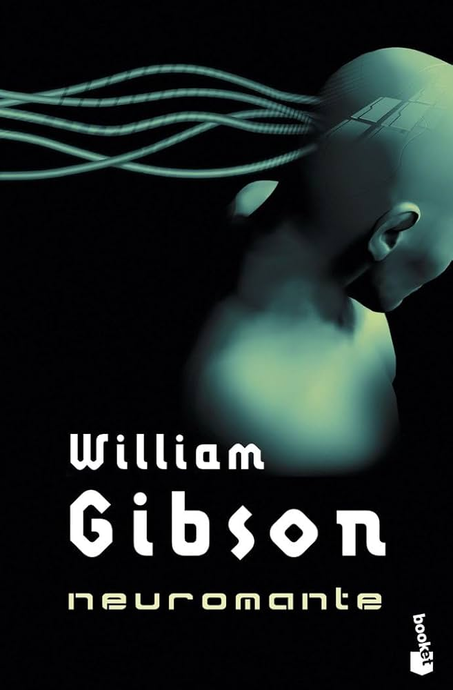
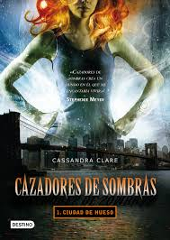

Sobre mí
Hola, soy Eriol. Me considero una persona curiosa y analítica, con un gran interés por la tecnología, los deportes y los automóviles.
Me esfuerzo por mantener un equilibrio entre el pensamiento crítico y la curiosidad, buscando siempre mejorar y enfrentar desafíos de manera efectiva y responsable.
Video de presentación
Mis cualidades
- Curioso
- Versátil
- Resiliente
- Gracioso
- Espontáneo
Mis pasatiempos
- Ver fútbol
- Jugar videojuegos
- Jugar fútbol
- Coleccionar Hot Wheels
Mis libros favoritos
1. Harry Potter – J.K. Rowling
Resumen: Una saga que narra las aventuras de un joven mago y sus amigos en su lucha contra el mal.

2. El Señor de los Anillos – J.R.R. Tolkien
Resumen: Una épica travesía por la Tierra Media en la que el bien y el mal se enfrentan por el destino del Anillo Único.
3. Los Juegos del Hambre – Suzanne Collins
Resumen: Katniss Everdeen lucha por sobrevivir en una competencia mortal mientras desafía un sistema opresivo.
4. Neuromante – William Gibson
Resumen: Un clásico del cyberpunk que explora la inteligencia artificial, los hackers y un futuro digitalizado.
5. Cazadores de sombras – Cassandra Clare
Resumen: Jóvenes con sangre angelical luchan contra criaturas oscuras en un mundo secreto dentro del nuestro.
Mis películas favoritas
1. Rápido y furioso: Reto Tokio
Director: Justin Lin
Protagonistas: Lucas Black, Sung Kang
2. Iron Man
Director: Jon Favreau
Protagonistas: Robert Downey Jr., Gwyneth Paltrow
3. Son como niños
Director: Dennis Dugan
Protagonistas: Adam Sandler, Kevin James
Canciones favoritas
| Nombre de la Canción | Género | Cantante | Álbum | Año |
|---|---|---|---|---|
| MIENTRAS DUERMES | Regional Mexicano | Junior H | $ad Boyz 4 Life II | 2023 |
| Vetemens | Música latina | Eladio Carrión & Myke Towers | DON KBRON | 2025 |
| Pensando en voz | Hip Hop/Rap | El Kid | La moda de invierno | 2009 |
| Cuerno Azulado | Regional Mexicano | Natanael Cano & Gabito Ballesteros | Nata Montana | 2023 |